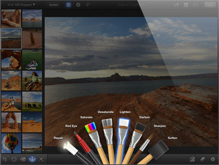

Review a fondo de iPhoto: El programa de edición fotográfica más avanzado para iPhone y iPad
Review a fondo de iPhoto: El programa de edición fotográfica más avanzado para iPhone y iPad
Como todos sabréis ya está disponible iPhoto para iOS tanto para iPhone como para iPad, és una aplicación universal por lo que si la compras en tu Iphone también la tendrás disponible gratis para Ipad. Aprovechando el lanzamiento del nuevo Ipad el pasado día 7 de Marzo, Apple aprovechó para lanzar por fin la tan [...]
Como todos sabréis ya está disponible iPhoto para iOS tanto para iPhone como para iPad, és una aplicación universal por lo que si la compras en tu Iphone también la tendrás disponible gratis para Ipad.
Aprovechando el lanzamiento del nuevo Ipad el pasado día 7 de Marzo, Apple aprovechó para lanzar por fin la tan deseada versión de iPhoto para dispositivos IOS. Algo que ya se llevaba esperando desde hace mucho tiempo y como no también recibimos el aluvión de rumores por todos lados, aunque eso sí, esta vez sí que se hizo realidad.
La aplicación está disponible en la App Store por 3,99 euros, algo cara por una parte, pero si también eres usuario de un Ipad, no dolerá tanto desembolsar esos 3,99 euros ya que és universal y no hace falta comprarla dos veces.
Hace escasos días hemos podido saber que la app ya cuenta con mas de un millón de descargas, es decir, más de un millón de usuarios ya han descargado la aplicación y de momento las críticas están siendo muy buenas, aunque como siempre suele pasar, hay algunos puntos a mejorar.
Primeras impresiones y apartados de la aplicación
Nada mas entrar en Iphoto nos encontramos que nos cargará todas las fotos que tengamos en el dispositivo, tendremos que tener un poco de paciencia ya que depende la cantidad de fotos que tengamos tardará más o menos tiempo. A partir ahí cada vez que entremos en la aplicación irá todo mucho más rápido, sólo tendrá que sincronizar las últimas fotos tomadas desde la última vez que accedimos a Iphoto.
A partir de aquí ya entramos de lleno en Iphoto donde nos encontramos con 4 apartados y la configuración de la app.
En el apartado Álbumes nos vamos a encontrar exactamente con los mismos álbumes que tenemos en nuestro carrete del Iphone/Ipad además del correspondiente álbum de las “Fotos en Streaming” si es que tenemos activada la opción de Fotos en Streaming, a partir de ahí si editamos desde Iphoto alguna foto se nos añadirá automáticamente un nuevo álbum titulado “Editadas“.
Después nos encontramos con “Fotos” donde se nos mostrarán todas las fotos tomadas con nuestro Idevice, si estamos con el Iphone se nos mostrarán las fotos que hemos tomado con él, y lo mismo si las hemos tomado con el Ipad.
El apartado “Eventos” nos permitirá sincronizar todas las fotos que tengamos en Iphoto de nuestro Mac vía iTunes para poder disponer de ellas en cualquier momento, para visualizarlas, retocarlas etc… Además también podremos conectar en el caso del Ipad el kit Ipad Camera Connection para poder importar fotografías.
En el último apartado “Diarios” podremos crear unos libros/diarios donde podremos añadir información extra de la fotografía como: títulos, notas, mapa, fecha, citas… Y poder compartirlo en Itunes, Icloud o incluso ver las fotos en modo pase de fotografías donde podemos elegir el estilo de los pases y si queremos añadir música a la presentación desde la misma app con la música que viene predeterminada o directamente desde la aplicación Música de nuestro Ipad/Iphone.
Aprovecho para destacar que los modos de pase Portfolio, línea temporal y papiroflexia son realmente muy bonitos.
Por último vamos a configuración donde podemos configurar a nuestra manera algunas opciones de la aplicación.
- Transferencia inalámbrica – Si activamos esta opción permitiremos que otros dispositivos IOS con iPhoto puedan transferir fotos a nuestro Idevice.
- Incluir ubicación de fotos – Si deseamos guardar la ubicación donde fueron tomadas las fotos al guardar o compartirlas.
- Búsqueda de ubicaciones – Si lo activamos permitimos a la app buscar información de las fotos, mapas y del tiempo para las fotos, álbumes, etc.
- Efectos de sonido en la app.
- Duplicar en el televisor si disponemos de un Apple TV.
Modo edición de fotografías
Al seleccionar una foto desde cualquiera de los Álbumes disponibles podremos acceder a varias opciones, en la barra superior nos encontramos con las opciones de compartir que explicamos más abajo, información de la foto donde se nos muestra información como los MPX de la foto, lugar donde fue tomada, fecha, megas que ocupa, tipo de archivo (png, jpg…), obertura, ISO y una pestaña comentarios donde si hemos compartido la foto en Facebook o Flickr nos saldrán los comentarios relacionados con esa fotos en dichas redes sociales.
Además si tenemos activada la función de geolocalización en la toma de fotos, podremos ver donde se a tomado la foto en los mapas de OpenStreetMap.
En la barra superior nos encontramos lo que son al fin los controles para el retoque y mejora de fotografías. Donde nos encontramos con las siguientes herramientas:
Herramienta recortar y enderezar – Nos permitirá mediante nuestros dedos y haciendo zoom con los mismos recortar la fotografía rápidamente. Además también tenemos disponible una rueda donde al “girarla” a la izquierda o derecha podremos inclinar la fotografía hacia esos sentidos. Además en el icono del engranaje podremos restaurar el recorte y enderezamiento o elegir una de las formas de recorte ya predefinidas por la aplicación.
Herramienta de exposición y balance de blancos – A través de esta opción tendremos tres opciones de retoque: regular los blancos y negros de la fotografía, el contraste y por último el brillo. Veréis que si jugais un rato con esta herramienta podréis conseguir ajustes muy buenos para las fotos. Sobre todo en fotos con exceso de luz o carencia de ésta.
Curvas de color – Esta herramienta nos va a permitir modificar la saturación y los colores simplemente arrastrando los dedos, así de sencillo, simplemente arrastra los dedos hacia arriba o abajo para modificar la saturación de todos los colores, o si queremos hacerlo por separado el Azul para los tonos azulados como el cielo, agua, etc. tonos verdes/amarillentos y marrones.
Además en esta herramienta podremos acceder a cambiar el balance de blancos a automático, luz del sol, nublado, con flash, fluorescente, etc. Como en todas las opciones de retoque de iPhoto tenemos la herramienta de ajustes personalizada para cada ajuste donde en este caso podremos copiar el color y pegarlo en otra foto que nosotros queramos sin necesidad de repetir todo el proceso de saturación de los colores y la opción: Conservar todos de piel para que en las fotografías de retratos o donde aparezcan personas, no modifique el tono de piel.
Herramienta Pinceles – Aquí nos vamos a encontrar con 8 tipos de pinceles distintos donde podremos elegir retoques del tipo: reparar, eliminar ojos rojos, saturar la foto, desaturar la foto, aclarar, oscurecer, nitidez y suavizar. Todo esto con una interfaz muy lograda donde nos aparecerán los 8 pìnceles desplegados a través de la pantalla de nuestro Iphone/Ipad.

Filtros – En esta última herramienta veremos como se desplega una especie de pantonera donde podremos elegir el tipo de efecto que queremos aplicar a nuestra foto, desde modificar los tonos cálidos y fríos; Bicromía donde cambiaremos la tonalidad general de la foto al color que seleccionemos gradualmente tanto verde como amarillo, rosa, azul…; Blanco y negro, aquí podemos definir el tipo de contraste de blancos y negros que tendrá nuestra foto, añadir viñetas a la foto, textura o simplemente poner la foto en modo sepia; Aura, este modo nos va a permitir por ejemplo resaltar las tonalidades rojas de la foto, pasarla a blanco y negro, desaturar un poco la foto sin llegar al blanco y negro intenso…; Antiguo, como bien dice el nombre del filtro nos permite darle un toque antiguo y vintage a nuestras fotos mediante 6 filtros que vienen predefinidos en la aplicación; y por último el filtro artístico donde vamos a poder dar unos toques en plan “pinceladas” a nuestras fotos de tal manera que parezca que han estado pintadas con pinceles de verdad.
Compartir nuestras fotografías retocadas con Iphoto
La aplicación nos permite compartir las fotos que tenemos en Iphoto en el Diario creando uno nuevo o añadiendo la foto a uno ya existente, al carrete donde simplemente exportará la foto retocada al carrete de nuestro Idevice; a Itunes mediante sincronización; opción por envío a través de e-mail; transferir las fotos a otros dispositivos IOS; Imprimir directamente en nuestra impresora; compartir en Twitter, que como ya sabéis desde IOS5 ahora hay mucha más implementación de Twitter en nuestros dispositivos; Flickr; Facebook y crear un pase de diapositivas para ver al momento.
Conclusiones
Iphoto para IOS está muy pero que muy lograda, aunque creo que le hacen falta un par de cosas para que realmente sea perfecta. Por un lado creo que sería interesante que Apple se planteara “fusionar” fotos y Iphoto para que de esta manera no tengamos que estar pasando de una app a otra para tener que retocar las fotos.
Además de añadir algunos filtros y como no marcos para darle más juego a la hora de retocar en la aplicación.
Iphoto está disponible para Ipad2 y el nuevo Ipad que será lanzado aquí en España mañana mismo, Iphone 4 y Iphone 4s.
Un millón de usuarios ya han descargado la app, a que esperas?
Recuerda que puedes descargar Iphoto en la App Store por 3,99 euros.
Instalar iPhoto en el iPad de primera generación sin jailbreak
Si no dispones de un Ipad2 y tienes el Ipad1, debes saber que puedes instalar Iphoto sin necesidad de acudir al jailbreak siguiendo estos pasos:
- Descarga Iphoto desde la App Store en Itunes o desde un Iphone.
- Instala la Utilidad de configuración del iPhone disponible para Mac y Windows.
- Dentro de “Biblioteca” en el programa, ves a la opción aplicaciones y añade Iphoto. Para poder añadir la app tendrás que hace click derecho sobre la app y selecciona “mostrar en finder”. Una vez hecho arrastra la app hasta la sección Aplicaciones en el programa Configuración del Iphone.
- Por último selecciona tu dispositivo en el listado de dispositivo del programa.
Con todo esto ya podrás acceder a Iphoto desde tu Ipad de primera generación.
Tutorial de GeekPrison